Vectors are defined as mathematical quantities that represent both magnitude and direction in Euclidean geometry.
They are commonly represented by arrows, whose size is analogous to their magnitude, and the way the vector points
is indicative of their direction.
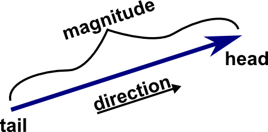
Their commonly cited counterparts are called scalars, mathematical quantities that represent only magnitude.
They are usually represented by numerical values, such as 5, 3.9 etc.
Vectors are everywhere. They appear in mathematics, physics, engineering and computer science. They are used to model forces,
describe velocity, geometry and also form the backbone of how AI processes human language.
Understanding vectors is absolutely essential for the majority of all higher mathematical modelling, which is especially relevant
in fields requiring applied mathematics, such as engineering.
Mathematical Representations of Vectors
Vectors can be represented in numerous ways.
One of the most relevant representations you will encounter is the component form.
The component form is when you show the vector as an ordered list of its values along each axis — essentially how
far the vector extends along each axis.
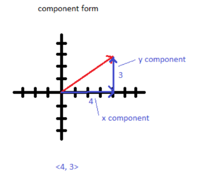
You may be wondering how this format would capture directional aspect. Direction is encoded simply because the axes
serve as the reference directions, so the numerical values of each component tell you how far to travel
in the direction of each axis.
Another important detail to note is the role of signs. Each component's sign indicates which one of the two possible directions along an axis you move. This must be specified as axes are 1D objects, meaning you can move along them in two ways.
This is specified using positive and negative signs. Whether the direction in which you move along an axis is defined as positive or negative is arbitrarily chosen — the key relationship is that the positive and negative signs on the components represent opposite directions
along that axis.
Therefore, this means that if you take a vector and flip its sign (or all of its components' signs), you will get the same vector, just pointing in the opposite direction. A visual representation of this is shown below. (Please note that the arrow above each letter signifies that the letter represents a vector.)
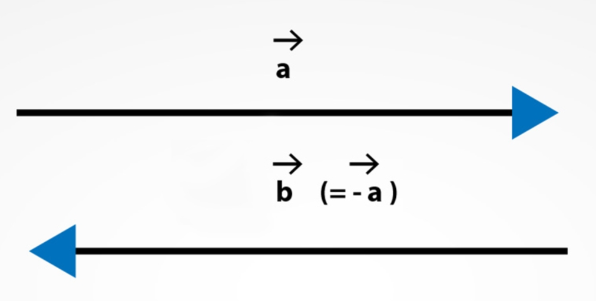
An example of component form would be the vector \([3,\,4,\,7]\) with x,y,z components (note that this is one of two cases of the component form — this is called row vector representation). Vectors written like this are also called row vectors.
Geometrically speaking, this means you start from some arbitrary point in space, be it the origin or something else, move \(+3\) units along the x axis, \(+4\) units along the y axis and \(+7\) units along the z axis.
Depending on what direction you set to be \(+\) or \(-\) on each axis, you can have different looking vectors.
A small but important detail to note about this and all other vector representations, is that there are 2 types of vectors that this could be describing, either position or free vectors.
Position vectors are vectors whose starting point is fixed at the origin of the coordinate system. These describe points in space, hence the name.
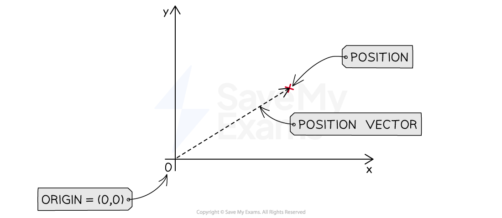
Free vectors, on the other hand, are able to begin at any point in space
and describe a displacement rather than a position, as they are not at the origin. When we write a vector like \([3,\,4,\,7]\), we are usually describing a free vector, unless explicitly stated otherwise.
The other case of the component form is the column vector representation. Instead of placing the component
values side by side, you stack them vertically.
This is especially useful in linear algebra, where matrices naturally operate on column vectors via matrix operations like addition, subtraction and multiplication.
They look a bit like this:
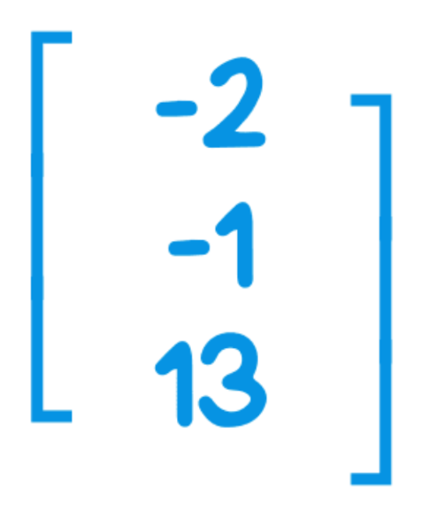
Another way to mathematically describe vectors is standard basis notation. Essentially, you describe a vector with the standard basis vectors.
The standard basis vectors are unit vectors along each axis of your space. They serve as the building blocks you use to construct any vector.
For reference, a unit vector is a vector with magnitude 1, i.e. if you were to represent it with an arrow, its size would be 1.
In 3D, the standard basis vectors are denoted by
\(\mathbf{i} = (1,0,0)\),
\(\mathbf{j} = (0,1,0)\),
\(\mathbf{k} = (0,0,1)\).
Do note that these are sometimes denoted with an additional hat on top of each letter.
Below is a visual representation of this concept:
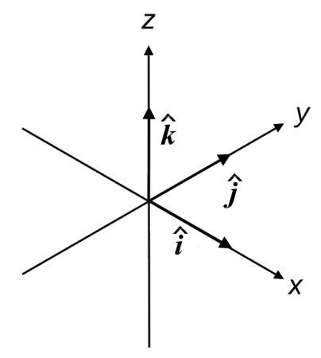
To show how this is used, let's take an example. Say we have a vector called b, that can be represented in row vector form as \([3,\,-1,\,-4]\).
Upon converting this to the standard basis notation, we get \(3\mathbf{i} - \mathbf{j} - 4\mathbf{k}\).
Vectors in 2D use the standard basis \(\mathbf{i} = (1,0)\) and \(\mathbf{j} = (0,1)\).
Beyond 3D—and also in 1D—mathematicians use the notation \(\mathbf{e}_n\) for standard basis vectors.
For example, in 4D the standard basis is:
\[
\mathbf{e}_1 = (1,0,0,0),\quad
\mathbf{e}_2 = (0,1,0,0),\quad
\mathbf{e}_3 = (0,0,1,0),\quad
\mathbf{e}_4 = (0,0,0,1)
\]
In general, for an \(n\)-dimensional space, the standard basis vectors are the following:
\[
\mathbf{e}_1,\mathbf{e}_2,\dots,\mathbf{e}_n
\]
where each \(\mathbf{e}_k\) has a 1 in the \(k\)-th position and 0 in all others.
Note that you can use \(\mathbf{e}_n\) notation in 3D and 2D as well, as an alternative.
Animated Construction of a 3D Position Vector from its Components
Magnitude (length) of vector inputted (press Run Simulation button to update value):
0
The Basic Vector and Scalar Operations & Magnitude
The basic vector and scalar operations are really quite easy to understand - this topic consists of vector addition, subtraction, and scalar multiplication.
Vector addition and subtraction work similarly to normal addition and subtraction, except you only add or subtract the numbers that are in the same position in each vector.
For example, take a vector \(\mathbf{A} = (3,\,-2,\,4)\) and a vector \(\mathbf{B} = (9,\,2,\,-4)\).
\[\mathbf{A} + \mathbf{B} = (3+9,\,-2+2,\,4-4) = (12,\,0,\,0)\]
In a similar manner,
\[\mathbf{A} - \mathbf{B} = (3-9,\,-2-2,\,4-(-4)) = (-6,\,-4,\,0)\]
Scalar multiplication is rather simple as well. It involves taking the scalar and multiplying by each value in the vector.
For example, take the aforementioned vector \(\mathbf{A}\).
\[5\mathbf{A} = (5\cdot 3,\; 5\cdot (-2),\; 5\cdot 4) = (15,\,-10,\,20)\]
Now that you understand these concepts, let us now apply them in order to calculate magnitudes of vectors!
(Quick reminder: the magnitude of a vector is the size of the vector, its length in space.)
The rule for magnitude is that the magnitude of any vector is equivalent to the square root of the sum of the squares of each component.
This is mathematically represented below. Do note that the double lines surrounding either side of v represent the magnitude.
\[\lVert \mathbf{v} \rVert = \sqrt{v_1^{\,2} + v_2^{\,2} + v_3^{\,2} + \dots + v_n^{\,2}}\]
This is derived from the Pythagorean theorem. As all the component vectors are perpendicular to each other, they can form right-angle triangles, allowing Pythagoras' to be applied.
Now, let's go through a practise problem together.
We are given a vector C.
\[\mathbf{C} = (13,\,-4,\,-7,\,-9)\]
In order to calculate C's magnitude we use the rule I talked about previously:
The rule for magnitude is that the magnitude of any vector is equivalent to the square root of the sum of the squares of each component.
\[\lVert \mathbf{v} \rVert = \sqrt{v_1^{\,2} + v_2^{\,2} + v_3^{\,2} + \dots + v_n^{\,2}}\]
Applying this rule to our specific vector:
\[\lVert \mathbf{C} \rVert= \sqrt{13^{2} + (-4)^{2} + (-7)^{2} + (-9)^{2}}\]
\[= \sqrt{169 + 16 + 49 + 81}\]
\[= \sqrt{315}\]
\[\lVert \mathbf{C} \rVert \approx 17.75\]
Beyond these types of calculations, magnitude has some interesting applications. One of them being normalisation.
Normalisation is the process of converting a vector into their corresponding unit vector; a vector with a magnitude of 1, but the same directional aligment as the original vector.
This process involves multiplying the original vector by the reciprocal of its magnitude, or dividing by its magnitude, a scalar.
Mathematically speaking, it can be expressed as below. Please note that putting a hat on top of the symbol representing the vector, denotes its unit vector.
\[
\hat{v} = \frac{1}{\|v\|}\,v
\]
\[
\hat{v} =
\left(
\frac{x}{\|v\|},\;
\frac{y}{\|v\|},\;
\frac{z}{\|v\|}
\right)
\]
As we have already understood scalar multiplication, this process will be trivial.
Let's take an example. Say we are given a vector E:
\[\mathbf{E} = (28,\; 3.9,\; -7.1)\]
Step 1: Compute the magnitude
\[\|\mathbf{E}\| = \sqrt{28^2 + 3.9^2 + (-7.1)^2}\]
\[28^2 = 784,\qquad 3.9^2 = 15.21,\qquad (-7.1)^2 = 50.41\]
\[\|\mathbf{E}\| = \sqrt{784 + 15.21 + 50.41}\]
\[\|\mathbf{E}\| = \sqrt{849.62}\]
\[\|\mathbf{E}\| \approx 29.147\]
Step 2: Normalise the vector
\[\hat{\mathbf{E}} = \left(\frac{28}{29.147},\;\frac{3.9}{29.147},\;\frac{-7.1}{29.147}\right)\]
\[\hat{\mathbf{E}} \approx (0.9607,\; 0.1338,\; -0.2435)\]
Final Answer:
\[\hat{\mathbf{E}} \approx (0.9607,\; 0.1338,\; -0.2435)\]
An interesting application of magnitudes and normalisation is the magnitude-direction representation of a vector. This essentially splits a vector into 2 components: its magnitude (scalar value) and its unit vector (for the directional aspect).
These 2 components, when multiplied by each other, give back the original vector. This makes sense when we rearrange the mathematical definition of a unit vector:
\[
v = (x,\; y,\; z)
\]
\[
\|v\| = \sqrt{x^2 + y^2 + z^2}
\]
\[
\hat{v} = \frac{v}{\|v\|}
\]
Rearranging the definition of the unit vector:
\[
v = \|v\|\,\hat{v}
\]
Since:
\[
\hat{v} = \left(
\frac{x}{\|v\|},\;
\frac{y}{\|v\|},\;
\frac{z}{\|v\|}
\right)
\]
Then:
\[
v = \|v\|\left(
\frac{x}{\|v\|},\;
\frac{y}{\|v\|},\;
\frac{z}{\|v\|}
\right)
\]
Which simplifies back to:
\[
v = (x,\; y,\; z)
\]
You may be wondering how this decomposition of vectors serves any purpose. Well, being able to separate a vector out into its magnitude and unit vector is useful
when you want to scale the original vector up or down, while maintaining the same direction, as you can just change the magnitude and multiply it by the unit vector.
In fact, I used
such a method in my 3D Double Pendulum simulation in order to ensure that the length of the rod joined to the bob of the pendulum remained constant, by scaling the position vector appropriately, according to the length of the rod describing
the location of the bobs every animation frame.
This is called enforcing rigid body constraints, and is used in real physics engines as well.
I hope you now understand the usefulness of the magnitude-direction representation of vectors via this example. Note that this is one of many applications, and there are other uses of it.
Dot Product
The dot product is a special operation you can perform on vectors that is extremely useful in any field involving mathematics.
Let's go over it.
First and foremost, the dot product is a scalar output. It produces a single real number from two vectors.
At its core, the dot product measures directional alignment between two vectors.
A positive dot product means the vectors are roughly aligned, and a negative dot product means they point in opposite directions.
A special case of the dot product is when it is equal to 0; in this case, the vectors are orthogonal (perpendicular). You will see why this is in just a moment.
Now, let us see the mathematical operation behind the dot product.
If we have two vectors:
\[
\mathbf{u} = (u_1, u_2, u_3), \quad \mathbf{v} = (v_1, v_2, v_3)
\]
then the dot product is computed component-wise:
\[
\mathbf{u} \cdot \mathbf{v} = u_1v_1 + u_2v_2 + u_3v_3
\]
This is the algebraic definition.
The geometric definition of the dot product is:
\[
\mathbf{u} \cdot \mathbf{v} = \|\mathbf{u}\|\,\|\mathbf{v}\|\cos\theta
\]
where:
\(\|\mathbf{u}\|\) and \(\|\mathbf{v}\|\) are the magnitudes of the vectors
\(\theta\) is the angle between them
Now, let us take it upon us to understand the reasoning behind why the dot product is defined as above.
We will be beginning with the geometric definition, in consideration of the fact it is the definition that is older and was known before the component one.
As we all know, our objective is to measure the directional alignment of 2 vectors. How will we do this? Well, let's start with a concept called projection.
Projection is the idea of taking 2 vectors and calculating how much one lies upon the other. In this scenario, we will specifically be calculating scalar projection, as in, the output will be a scalar. There is also vector projection, but that is less important for now.
Let's take two 2D position vectors, \( \mathbf{u} \) and \( \mathbf{v} \), given:
\[
\mathbf{u} = \begin{bmatrix} 3 \\ 2 \end{bmatrix}
\]
\[
\mathbf{v} = \begin{bmatrix} 1 \\ 9 \end{bmatrix}
\]
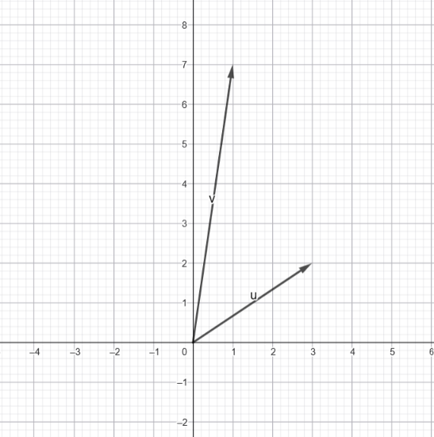
To calculate the scalar projection, we will need the aid of some basic trigonometry. Specifically, we need the cosine function.
The scalar projection of \( \mathbf{u} \) upon \( \mathbf{v} \) is equivalent to the magnitude of \( \mathbf{u} \), multiplied by \( \cos\theta \), the angle between the two vectors \( \mathbf{u} \) and \( \mathbf{v} \).
\[
\text{scalar_proj}_{\mathbf{v}}(\mathbf{u}) = |\mathbf{u}| \cos\theta
\]
Note that if you wanted to calculate the vector projection of \( \mathbf{u} \) upon \( \mathbf{v} \) you would simply multiply the scalar projection by the normalised version of \( \mathbf{v} \), or its unit vector.
\[
\text{vector_proj}_{\mathbf{v}}(\mathbf{u}) = \text{scalar_proj}_{\mathbf{v}}(\mathbf{u})\,\hat{\mathbf{v}}
\]
\[
\text{vector_proj}_{\mathbf{v}}(\mathbf{u}) =
\text{scalar_proj}_{\mathbf{v}}(\mathbf{u})\,\frac{\mathbf{v}}{\|\mathbf{v}\|}
\]
Let's now understand where we got this from. If we form a right-angle triangle with \( \mathbf{u} \) and \( \mathbf{v} \), as shown below the equations, the magnitude of the adjacent (which is the projection of \( \mathbf{u} \) upon \( \mathbf{v} \)) will be the hypotenuse multiplied by \( \cos\theta \), according to the identity
\[
\cos\theta = \frac{A}{H},
\]
which, when rearranged to make \(A\) the subject, gives
\[
A = H \cos\theta.
\]
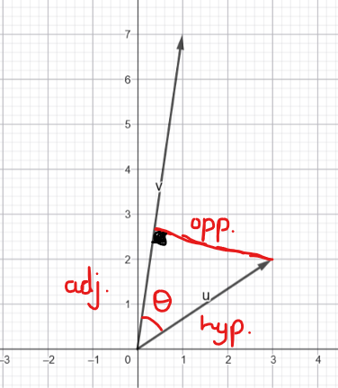
Do remember that the ultimate goal of the dot product is to quantify the directional aligment of both vectors with each other.
To incorporate the influence of v itself, we multiply its magnitude by the scalar projection of u upon v, giving us a weighted measure of how strongly u points along v.
This weighting is also symmetric: upon closer examination we can see that the same expression can be rearranged to reveal the scalar projection of v upon u multiplied by the magnitude of u.
Below is the mathematical evidence:
We begin with the geometric definition of the dot product that we have derived:
\[
\mathbf{u} \cdot \mathbf{v} = |\mathbf{u}|\,|\mathbf{v}| \cos\theta
\]
If we calculate the scalar projection of \( \mathbf{v} \) upon \( \mathbf{u} \), we will see that it is equivalent to \( |\mathbf{v}| \cos\theta \):
\[
\text{scalar_proj}_{\mathbf{u}}(\mathbf{v}) = |\mathbf{v}| \cos\theta
\]
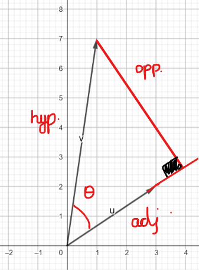
You will notice that the scalar projection of \( \mathbf{v} \) upon \( \mathbf{u} \) can also be found inside the geometric definition.
Rearranging the geometric definition gives:
\[
|\mathbf{v}| \cos\theta
= \frac{\mathbf{u} \cdot \mathbf{v}}{|\mathbf{u}|}
\]
This shows that the dot product contains both:
the scalar projection of \( \mathbf{u} \) upon \( \mathbf{v} \):
the scalar projection of \( \mathbf{v} \) upon \( \mathbf{u} \):
\[\text{scalar_proj}_{\mathbf{u}}(\mathbf{v}) = |\mathbf{v}| \cos\theta = \frac{\mathbf{u} \cdot \mathbf{v}}{|\mathbf{u}|}\]
This shows how the dot product captures how much each vector aligns with the other simultaneously, which is why it is a mutual measure of directional alignment.
Now let's derive the component form of the dot product.
Say we have two 3D position vectors called a and b.
We can write these 2 vectors like below, in row vector form:
\[
\mathbf{a} = (a_1, a_2, a_3), \qquad \mathbf{b} = (b_1, b_2, b_3)
\]
To connect this to the geometric definition, we rewrite them using the standard basis vectors i, j, k:
\[
\mathbf{a} = a_1\mathbf{i} + a_2\mathbf{j} + a_3\mathbf{k}
\]
\[
\mathbf{b} = b_1\mathbf{i} + b_2\mathbf{j} + b_3\mathbf{k}
\]
Now let's try and find the dot product of a and b when we write it in this form.
Using linearity of the dot product (it distributes over addition and allows scalars to factor out), we expand:
\[
\mathbf{a}\cdot\mathbf{b}
= (a_1\mathbf{i} + a_2\mathbf{j} + a_3\mathbf{k})
\cdot
(b_1\mathbf{i} + b_2\mathbf{j} + b_3\mathbf{k})
\]
Expanding like a product of brackets:
\[
= a_1b_1(\mathbf{i}\cdot\mathbf{i})
+ a_1b_2(\mathbf{i}\cdot\mathbf{j})
+ a_1b_3(\mathbf{i}\cdot\mathbf{k})
\]
\[
+ a_2b_1(\mathbf{j}\cdot\mathbf{i})
+ a_2b_2(\mathbf{j}\cdot\mathbf{j})
+ a_2b_3(\mathbf{j}\cdot\mathbf{k})
\]
\[
+ a3b1(\mathbf{k}\cdot\mathbf{i})
+ a_3b_2(\mathbf{k}\cdot\mathbf{j})
+ a_3b_3(\mathbf{k}\cdot\mathbf{k})
\]
From the geometric definition, we can calculate the dot products shown below, remembering that the basis vectors each represent +1 unit along their respective coordinate axes.
\[
\mathbf{i} = (1,0,0),\quad
\mathbf{j} = (0,1,0),\quad
\mathbf{k} = (0,0,1)
\]
\[
\mathbf{i}\cdot\mathbf{i}
=\mathbf{j}\cdot\mathbf{j}
=\mathbf{k}\cdot\mathbf{k}
=1
\]
\[
\mathbf{i}\cdot\mathbf{j}
=\mathbf{i}\cdot\mathbf{k}
=\mathbf{j}\cdot\mathbf{k}
=0
\]
So all mixed terms vanish, and we are left with:
\[
\mathbf{a}\cdot\mathbf{b}
= a_1b_1 + a_2b_2 + a_3b_3
\]
Please take note that this goes for vectors in higher dimensions as well, regardless of the number of components. The ones we have derived above are specifically for 3D.
Now that we have thoroughly understood the dot product, let's move onto some questions.
I know I just threw an overwhelming amount of information at you, so here below are some questions to help you retain some of that knowledge.
If any answers end up being irrational or long decimals, round to 2 decimal places.
1. Compute the magnitude of the vector:
\[
\lVert \mathbf{v} \rVert = \lVert (6, -8) \rVert
\]
You might be wondering how we got from vectors to coordinates.
Well, different coordinate systems describe any vectors that live in space differently compared to other coordinate systems.
This includes things like electric fields which are actually represented mathematically as vector fields.
These different ways are useful as some processes are easier to do in one specific coordinate system than others.
For our purposes, this is enough to explain why this topic is relevant to learn.
Now, let's move onto the content.
The Cartesian coordinate system will be the one you are most likely familiar with. It is the standard way of locating points in space. You choose a number of axes (one for each dimension) and all points are described
by how far you move along each axis.
In 3D, we use the 3 perpendicular x, y and z axes.
A point written as (x,y,z) in the Cartesian coordinate system tells you to move x units along the x-axis, y units along y-axis, and z units along the z-axis to reach the exact point in 3D space described by this notation.
This is the coordinate system I used in my earlier 3D simulation.
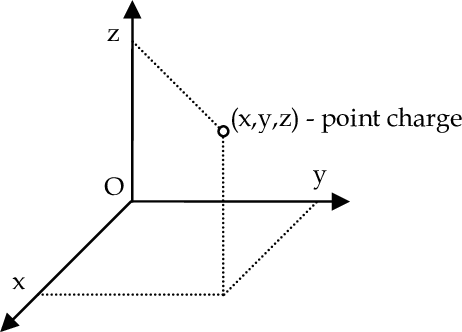
Now we can look at the polar and spherical coordinate systems. They are the same style of coordinate system, but the polar system is the 2D version and the spherical system is the 3D extension of the same concept.
Let's start with the polar coordinate system.
This system describes points on a 2D plane using an angle and a distance to specify its location.
To understand what I mean by this, let's take an example.
Say we have the point (2,3) on a typical 2D plane. If we wanted to convert this to polar coordinates, we would have to calculate the distance from the origin (r) and the angle formed between the x-axis and the line connecting the origin and the point (2,3), in the counter-clockwise direction, \(\theta\).
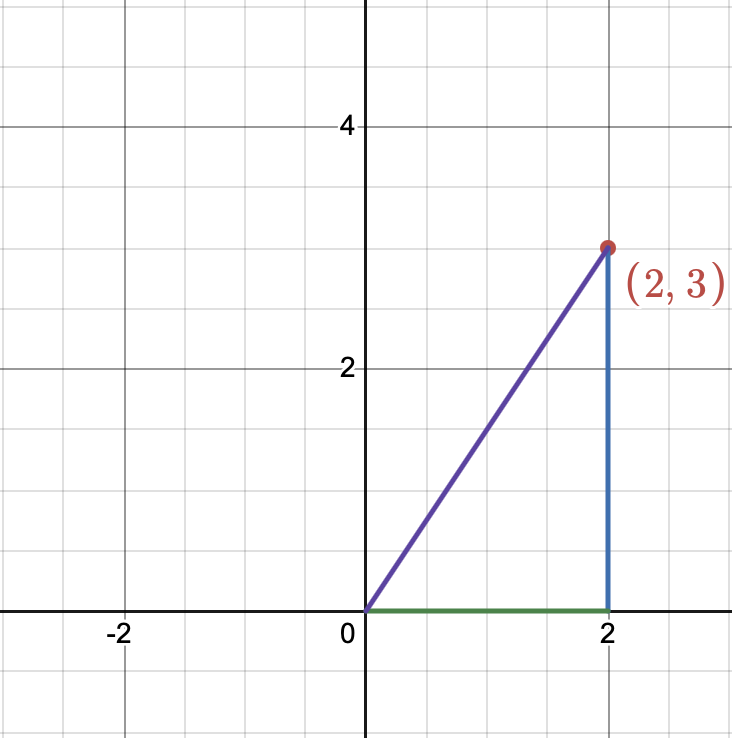
To find the distance from the origin, we must calculate the length of the hypotenuse shown above. The point (2,3) forms a right angle triangle with the origin, with legs of length 2 and 3.
Using the Pythagorean Theorem:
\[
r = \sqrt{x^2 + y^2}
\]
Substitute \(x = 2\) and \(y = 3\):
\[
r = \sqrt{2^2 + 3^2}
\]
\[
r = \sqrt{4 + 9}
\]
\[
r = \sqrt{13}
\]
So the distance from the origin is:
\[
r = \sqrt{13}
\]
To calculate the angle formed by the x-axis and the hypotenuse in the counter-clockwise direction, we can use some trigonometry.
One can choose any of the 3 basic trigonometric functions to calculate this, but I will be using sine.
The opposite side to θ is 3, and the hypotenuse is \(r = \sqrt{13}\).
Using sine:
\[
\sin(\theta) = \frac{\text{opposite}}{\text{hypotenuse}}
\]
\[
\sin(\theta) = \frac{3}{\sqrt{13}}
\]
Now take the inverse sine:
\[
\theta = \sin^{-1}\left(\frac{3}{\sqrt{13}}\right)
\]
Evaluating:
\[
\theta \approx 59.04^\circ
\]
Rounded to 2 decimal places:
\[
\theta = 59.04^\circ
\]
Using these, we can now convert the Cartesian coordinate (2,3) into its polar form using r and \(\theta\).
The polar form of (2,3) is:
\[
(\sqrt{13},\, 59.04^\circ)
\]
That is: radius \(\sqrt{13}\) and angle \(59.04^\circ\). Note that the angle can also be described in radians.
Now, time to understand how to do the reverse, i.e. convert from polar coordinates to Cartesian coordinates.
Let's take the below polar coordinate and try to find its Cartesian form:
\[
(2\sqrt{2},\; 45^\circ)
\]
Using our knowledge of what this represents, we can draw the diagram below in the Cartesian plane.
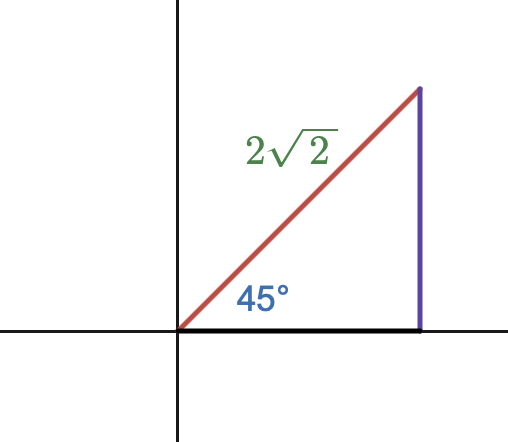
To write it in Cartesian form, we must calculate the x and y components. These x and y components are the legs of the right angle triangle.
Therefore, to find the Cartesian form we must calculate the lengths of the legs. We can do this using the trigonometric functions sine and cosine.
At the angle \(\theta\):
- the adjacent side to \(45^\circ\) is the x-component
- the opposite side to \(45^\circ\) is the y-component
- the hypotenuse is the given radius \(2\sqrt{2}\)
So we use the basic trig ratios exactly as they appear in the triangle:
For the x-component (adjacent):
\[
\cos(45^\circ) = \frac{\text{adjacent}}{\text{hypotenuse}}
\]
Rearranging to get the adjacent side:
\[
x = (\text{hypotenuse}) \cdot \cos(45^\circ)
\]
\[
x = 2\sqrt{2}\cos(45^\circ)
\]
For the y-component (opposite):
\[
\sin(45^\circ) = \frac{\text{opposite}}{\text{hypotenuse}}
\]
Rearranging to get the opposite side:
\[
y = (\text{hypotenuse}) \cdot \sin(45^\circ)
\]
\[
y = 2\sqrt{2}\sin(45^\circ)
\]
Since at \(45^\circ\) the cosine and sine are both \(\frac{\sqrt{2}}{2}\), each component becomes:
\[
x = 2\sqrt{2} \cdot \frac{\sqrt{2}}{2} = 2
\]
\[
y = 2\sqrt{2} \cdot \frac{\sqrt{2}}{2} = 2
\]
So, the Cartesian form is:
\[
(2,\,2)
\]
In these past examples, we have used the geometric relationships between polar and Cartesian coordinates to convert between. In fact, there are formulas for these conversions,
but we have just implicitly used and derived them without knowing.
For rigorousness and ease of application, here are the formulas if you want to memorize them:
Polar → Cartesian
\[
x = r\cos(\theta)
\]
\[
y = r\sin(\theta)
\]
Cartesian → Polar
\[
r = \sqrt{x^2 + y^2}
\]
\[
\theta = \tan^{-1}\left(\frac{y}{x}\right)
\]
\[
\theta = \sin^{-1}\left(\frac{y}{r}\right)
\]
\[
\theta = \cos^{-1}\left(\frac{x}{r}\right)
\]
The spherical coordinate system is just an extension of this into 3D space. It uses the distance from the origin and 2 angles to locate a point in space.
The angles are classified into 2 different types: the azimuth angle (\(\phi\)) and the theta angle (\(\theta\)).
The azimuth angle is angle measured from the +x axis counter-clockwise.
The theta angle is the angle measured from the +z axis downwards, towards the xy plane.
I won't go into much depth, since it is relatively simple once you understand polar coordinates.
If +x is to the right, -x to the left, +y is up, -y is down, +z is away from you, and -z is towards you, this means that when the azimuth angle is 0 degrees, it points along the +x axis, and when it is 90 degrees, it points along the +z axis.
The theta angle is measured from the +z axis downwards, meaning that when it is 0 degrees, it points along the +z axis, and when it is 90 degrees, the point will lie parallel to the xy-plane.
Applications of Vectors
Vectors have a variety of applications in a variety of fields. The three I will be discussing in this section are physics, geometry and computer graphics.
Let's start with physics.
Physics uses vectors to describe physical quantities, specifically those with magnitude and direction, which is almost all of them. Force vectors, velocity vectors, acceleration vectors, and even fields are described with vectors, as every point in space within the field is assigned a vector
which describes the force it would exert on another object, given it met the conditions for this.
Below is a diagram showing electric field lines, which are the vector descriptions of electric fields, the topic I discussed earlier.
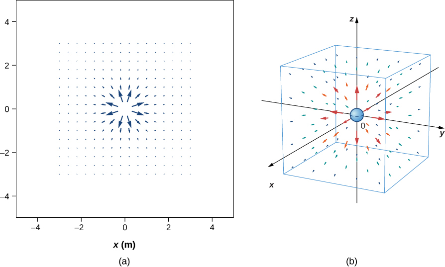
In geometry, vectors are useful to describe positions, movements and shape in an algebraic way which is much more flexible and easier to mathematically process than coordinates alone.
For example, we have position vectors that describe points in space, and vector operations that can be used to describe paths in space. Modern geometry uses vectors everywhere, because of the fact it makes lines and shapes algebraic.
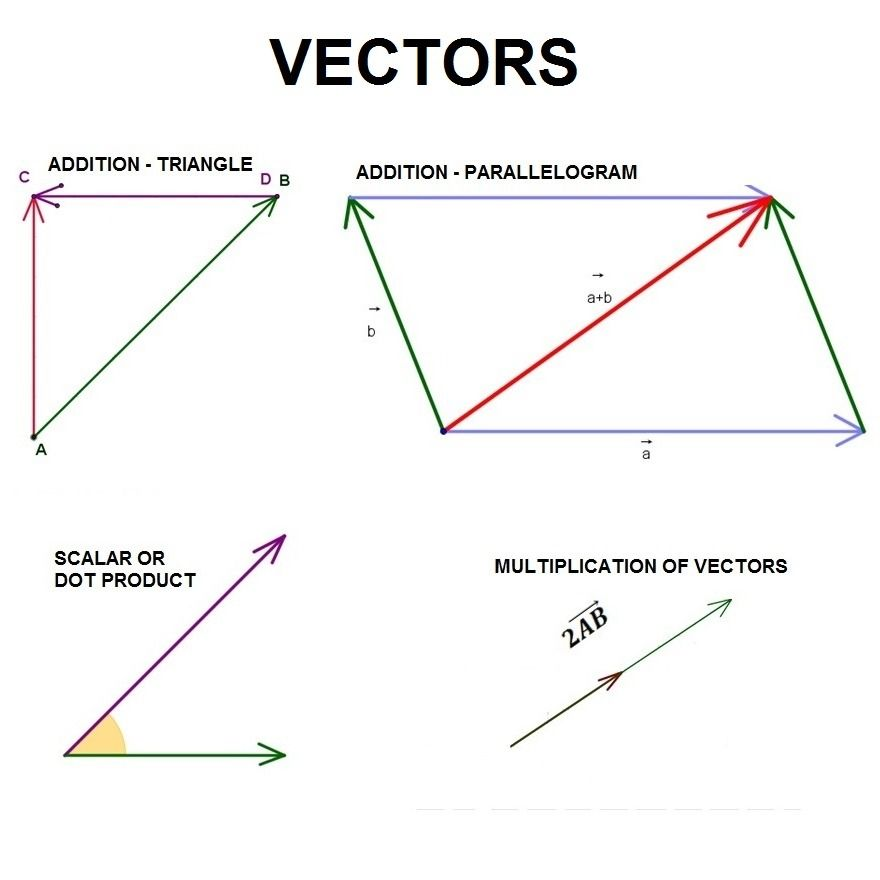
In computer graphics, vectors are used for a myriad of things.
Most commonly, they are used for describing the positions of objects in 3D space, which is especially relevant in fast-paced computer games that involve a lot of movement, such as VALORANT or Fortnite.
Furthermore, they are used to calculate and adjust camera orientation dynamically, another important feature.
They are even used to describe and adjust lighting, light direction, reflection and shading. As you can see, a lot of things you take for granted in the day-to-day on your computer, all rely on vectors and vector calculations.
Please note that I have not even covered half of vectors various applications in the section. They are too versatile and used everywhere for me to do so.
The End
Thank you so much for using my interactive course to learn about vectors! I really hope it helped!